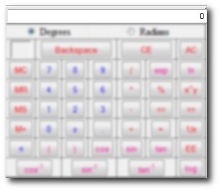

This section is to teach you how to use the different buttons of the Scientific Calculator. You will learn the names of the function of each button as well as how to use them. The buttons are split into sections:
Quick note before you proceed:
The display below will be called a few things.

Display, Equation Display, Current Equation, the Equation